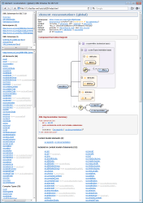
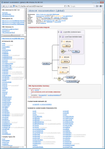
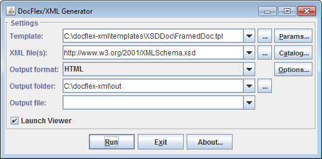

|
 |
That, in effect, will turn the DocFlex/XML+OxygenXML combination into a single unique documentation generator not available in any of these products. Click on the following screenshot to see a sample documentation generated with it:

<xs:import>, <xs:include>,
<xs:redefine> of other XML schemas and generating single documentation for all involved
XML schemas together with all OxygenXML diagrams in place. (See also: Using XML Catalog.)
When you generate documentation by lots of independent XML schemas, OxygenXML must be run separately for each of them in order to generate the XSD diagrams. That takes substantial time. Running OxygenXML in multiple concurrent threads allows processing several XML schemas simultaneously. That may accelerate the generation of diagrams several times!
See also: DocFlex/XML | XSDDoc | Templates | Parameters | Integrations | Oxygen XML | Multithread Processing
Concerning which versions are supported, we have tested this integration starting from Oxygen XML 13. Actually, all comes down to the following:
schemaDocumentation.bat (or schemaDocumentation.sh under Linux) is included.
schemaDocumentation.bat argument.
| The XSLT style sheet passed by the integration converts the XML file generated by OxygenXML into another XML file convenient for further processing by the integration Java code. |
| Processing | Description |
|---|---|
|
The Full Mode is activated in the presence of a
Commercial License for
“DocFlex/XML OxygenXML Integration”.
This mode allows you to use the integration without any limitations.
Once it is enabled, you may think about the integration as just another part of
DocFlex/XML executables.
Anything else will depend on your other licenses.
|
|
|
The Trial Mode is activated in the presence of a
Trial License
for
“DocFlex/XML OxygenXML Integration”.
In this mode, the integration will work the same as in the
full mode. However, no matter what your other licenses are
the following limitations will be enforced:
|
See Also:
docflex-xml.jar.
However, to get it work, you will need to install a “DocFlex/XML OxygenXML Integration” license and specify a few additional settings.
The license comes as a single 'docflex-xml-oxygenxml.license' file
or it may be included in a combined 'docflex-xml.license' file (along with other licenses).
In either case, you should save the license file in the 'lib' directory of your
DocFlex/XML installation:
{docflex-xml}/lib
where the license is searched for by default (near 'docflex-xml.jar' file).
It is also possible to specify any other location of your license file directly on the generator or template designer command line using the -license option.
You will get some directory: {docflex-xml}
docflex-xml.license file (containing the “OxygenXML Integration”
license) in the directory:
{docflex-xml}\lib
{docflex-xml}\integrations\OxygenXML
Edit generator.bat found in that directory, in these lines:
::---------------------------------------------------------------------- :: Specify the location of JRE/JDK 7.x, 6.x, 5.x or 1.4.x here ::---------------------------------------------------------------------- set JAVA_HOME=C:\Program Files\Java\jre7 ::---------------------------------------------------------------------- :: Specify the location of OxygenXML home directory ::---------------------------------------------------------------------- set OXYGENXML_HOME=C:\Program Files\Oxygen XML Editor 15 |
generator.bat. The
Generator Dialog should appear:

Now, you can test the generation of XML schema documentation with OxygenXML diagrams included.
Check that everything is specified as shown on the screenshot. Then, click the <Run> button. When the generation finishes, the result documentation should be open automatically in the default HTML browser.
You will get some directory: {docflex-xml}
docflex-xml.license file (containing the “OxygenXML Integration”
license) in the directory:
{docflex-xml}/lib
{docflex-xml}/integrations/OxygenXML/linux
Edit generator.sh found in that directory, in these lines:
#!/bin/sh #---------------------------------------------------------------------- # Specify the location of Sun JRE/JDK 7.x, 6.x, 5.x or 1.4.x here #---------------------------------------------------------------------- JAVA_HOME="/home/user/jdk1.7" #---------------------------------------------------------------------- # Specify the location of OxygenXML home directory #---------------------------------------------------------------------- OXYGENXML_HOME="/home/user/Oxygen XML Editor 15" |
Then, specify a permission to allow executing it as a program.
generator.sh. The
Generator Dialog should appear:

Now, you can test the generation of XML schema documentation with OxygenXML diagrams included.
Check that everything (i.e. the main template and the XML file) is specified similar as shown on the screenshot. Then, click the <Run> button. When the generation finishes, the result documentation should be open automatically in the default HTML browser (if not, you can find it in the output directory).
-m:IMAGE_PROVIDER_CLASS=com.docflex.xml.OxygenXML.Kit
| The integration main class implements an Element Image Provider, whose job is to provide some graphical representations of particular DSM elements (the data entities, with which templates operate). The image provider may be a separate interchangeable subsystem, adjusted for a particular generator setup. All other related settings are effectively the image provider parameters. |
| The integration works by calling OxygenXML's own documentation generator for the specified XML schemas, by which it generates the XSD diagrams along with some intermediate XML file (containing all the data, image references and hypertext image maps) supposed for further processing. That XML file is analyzed so as to associate the diagram images (and image map links) with particular DSM elements representing XML schema components in templates. That makes the diagrams and their hyperlinks available through Image Control (as “element images”) to be inserted in the output documentation generated by DocFlex/XML. |
{OxygenXML Home}\schemaDocumentation.bat
{OxygenXML Home}/schemaDocumentation.sh
cmd.exe on Windowssh on LinuxOn Windows, the whole command launching the OxygenXML's own doc-generator will look like this:
cmd.exe /C "C:\Program Files\Oxygen XML Editor 15\schemaDocumentation.bat"
sh "/home/user/Oxygen XML Editor 15/schemaDocumentation.sh"
Such a command must be passed to the OxygenXML Integration on the Java command-line that runs DocFlex/XML. It is done using -m option. Here is the Windows variant:
-m:OXYGENXML_COMMAND="cmd.exe /C \"C:\Program Files\Oxygen XML Editor 15\schemaDocumentation.bat\""
'\').
On Linux, the same will look like this:
-m:OXYGENXML_COMMAND="sh \"/home/user/Oxygen XML Editor 15/schemaDocumentation.sh\""
Here is a simple Windows BAT command file that would launch such a generation (with the red are highlighted settings related to the OxygenXML Integration):
xsddoc.bat
| ||||||||||||||
The following shell script file will generate a framed HTML documentation (with OxygenXML diagrams) using XSDDoc | Templates | FramedDoc.tpl template by the XML schema located at the URL: http://www.w3.org/2001/XMLSchema.xsd
xsddoc.sh
#!/bin/sh
|
As an example, here is an ANT build.xml file
doing the same as the Windows BAT file described above.
build.xml
|
<?xml version="1.0"?>
<project basedir="." name="DocFlex/XML+OxygenXML+Ant Integration Demo">
<!-- This will generate an XML schema documentation -->
<target name="XSDDoc">
<!-- DocFlex/XML home directory -->
<property name="DFH" value="C:\docflex-xml"/>
<!-- DocFlex/XML Java class path -->
<property name="CLASSPATH" value="${DFH}\lib\xml-apis.jar;${DFH}\lib\xercesImpl.jar;${DFH}\lib\resolver.jar;${DFH}\lib\docflex-xml.jar"/>
<!-- OxygenXML home directory -->
<property name="OXYGENXML_HOME" value="C:\Program Files\Oxygen XML Editor 15"/>
<!--
Execute the DocFlex/XML generator. --> <java classname="com.docflex.xml.Generator" classpath="${CLASSPATH}" fork="true" maxmemory="512m">
<!--
All options you want to pass to the DocFlex/XML Generator should be specified here with the <arg> elements in the same order as on the command line. --> <!-- specify OxygenXML Integration main class as the element image provider -->
<arg value="-m:IMAGE_PROVIDER_CLASS=com.docflex.xml.OxygenXML.Kit"/>
<!--
Pass the integration parameter: the OS command to call OxygenXML's own XML schema doc-generator. The command arguments with spaces must be enclosed in quotes ('"') to be recognized by the generator as a single argument. Here, such quotes are encoded with '\"', where the '"' is to encode '"' in XML and '\' before it is to pass the quote through Windows command line issued by Ant to launches DocFlex/XML. --> <arg value="-m:OXYGENXML_COMMAND=cmd.exe /C \"${OXYGENXML_HOME}\schemaDocumentation.bat\""/>
<!-- specify the main template -->
<arg value="-template"/>
<arg value="${DFH}\templates\XSDDoc\FramedDoc.tpl"/>
<!-- pass the template parameter 'docTitle' (the documentation title) -->
<arg value="-p:docTitle"/>
<arg value="XML Schema for XML Schemas"/>
<!-- the output format -->
<arg value="-format"/>
<arg value="HTML"/>
<!-- the output directory -->
<arg value="-d"/>
<arg value="${DFH}\out"/>
<!-- do not launch the generator GUI -->
<arg value="-nodialog"/>
<!-- do not launch the default viewer for the output file -->
<arg value="-launchviewer=false"/>
<!--
Specify one or many data source XML files to be processed by the specified template. Both local pathnames and URLs are allowed. In this example, it is an XML schema to be documented. --> <arg value="http://www.w3.org/2001/XMLSchema.xsd"/>
</java>
</target>
</project>
|
To run that build.xml file, you can use a Windows BAT command file specified like the following:
(Note that it should be started from the directory containing the Antset ANT_HOME=C:\apache-ant set PATH=%ANT_HOME%\bin;%PATH% set JAVA_HOME=C:\Program Files\Java\jdk1.7 call %ANT_HOME%\bin\ant.bat xsddoc
build.xml file!)
The following project POM file shows how to configure the DocFlex/XML Maven Plugin to generate a framed HTML XML schema documentation by the XML schema located at http://www.w3.org/2001/XMLSchema.xsd using DocFlex/XML | XSDDoc | FramedDoc.tpl + OxygenXML Integration, so that the result doc would appear on the “Project Reports” page of a Maven-generated project site.
pom.xml
|
<project>
...
<!-- Specify properties (i.e. variables for further usage) -->
<properties>
<!-- DocFlex/XML home directory -->
<DFH>C:\docflex-xml</DFH>
<!-- OxygenXML home directory -->
<OXYGENXML_HOME>C:\Program Files\Oxygen XML Editor 15</OXYGENXML_HOME>
</properties>
...
<!--
Reporting section. All reports for "Project Reports" page of the Maven-generated site should be specified here. --> <reporting>
<plugins>
<!-- Configure DocFlex/XML Maven plugin -->
<plugin>
<groupId>docflex</groupId>
<artifactId>docflex-xml-maven-plugin</artifactId>
<version>1.0</version>
<configuration>
<!-- Specifying command-line parameters for DocFlex/XML Generator -->
<generatorParams>
<!-- Specify OxygenXML Integration main class as element image provider -->
<param>-m:IMAGE_PROVIDER_CLASS=com.docflex.xml.OxygenXML.Kit</param>
<!--
Pass the integration parameter: the OS command to call OxygenXML's own XML schema doc-generator. The command arguments with spaces must be enclosed in quotes ('"') to be recognized by the generator as a single argument. --> <param>-m:OXYGENXML_COMMAND=cmd.exe /C "${OXYGENXML_HOME}\schemaDocumentation.bat"</param>
<!-- The main template -->
<param>-template</param>
<param>${DFH}\templates\XSDDoc\FramedDoc.tpl</param>
<!-- Pass template parameter -->
<param>-p:docTitle</param>
<param>XML Schema for XML Schemas</param>
<!-- Specify the output format -->
<param>-format</param>
<param>HTML</param>
<!-- Suppress showing up the generator GUI -->
<param>-nodialog</param>
<!-- Suppress most of the generator messages -->
<param>-quiet</param>
<!--
Specify one or many data source XML files to be processed by the specified template. (Both local pathnames and URLs are allowed.) In this example, it is an XML schema to be documented. --> <param>http://www.w3.org/2001/XMLSchema.xsd</param>
</generatorParams>
<!--
Specify the output directory name. The plugin will convert it into the absolute pathname of the output directory, which is passed further both to Maven and to DocFlex/XML Generator (via -d option). --> <outputFolder>xsddoc</outputFolder>
<!-- For the Maven project-reports page -->
<name>XSDDoc</name>
<description>XML Schema for XML Schemas</description>
</configuration>
</plugin>
</plugins>
</reporting>
...
</project>
|
To run that pom.xml file, you can use a Windows BAT command file specified like the following:
(Note that it should be started from the directory containing the Mavenset JAVA_HOME=C:\Program Files\Java\jdk1.7 set M2_HOME=C:\apache-maven-2.0.9 set MAVEN_OPTS=-Xms256m -Xmx512m call %M2_HOME%\bin\mvn.bat site:site
pom.xml file!)
<import namespace="http://schemas.xmlsoap.org/wsdl/"/>
<xs:include schemaLocation="urn:oasis:names:tc:dita:xsd:glossaryGrp.xsd:1.1"/>
XML catalogs can help to resolve physical locations of XML schema files. They redirect abstract URIs to physical URLs. For more details about XML catalogs, please read: DocFlex/XML | Documentation | Installation / Configuration Files | XML Catalogs.
Both DocFlex/XML and Oxygen XML can use XML catalogs.
http://schemas.xmlsoap.org/wsdl/
http://schemas.xmlsoap.org/wsdl/soap/
http://schemas.xmlsoap.org/wsdl/soap12/wsdl11soap12.xsd
http://schemas.xmlsoap.org/wsdl/http/
http://schemas.xmlsoap.org/wsdl/mime/
http://schemas.xmlsoap.org/wsdl/soap12/wsdl11soap12.xsd).
The XML schema:
http://schemas.xmlsoap.org/wsdl/
<xs:import> element:
<xs:import namespace="http://schemas.xmlsoap.org/wsdl/"/>
That is not enough for Oxygen XML to process such an import (even though the schema file is located by the same URL as the target namespace URI). But, the problem can be fixed with the following XML catalog file:
catalog.xml
|
<?xml version="1.0"?>
<catalog xmlns="urn:oasis:names:tc:entity:xmlns:xml:catalog">
<uri name="http://schemas.xmlsoap.org/wsdl/" uri="http://schemas.xmlsoap.org/wsdl/"/>
</catalog>
|
When that catalog.xml file has been specified in OxygenXML as shown on this screenshot:

DocFlex/XML also allows settings XML catalogs. See: DocFlex/XML | Documentation | Running Generator | Generator GUI | Assigning XML Catalog(s).
In this particular case it wasn't needed because XSDDoc is programmed to check automatically if a namespace URI points to the physical schema. But, for instance, to generate XML Schemas for DITA 1.1, setting the XML catalog (http://docs.oasis-open.org/dita/v1.1/OS/schema/catalog.xml) will be required for both OxygenXML and DocFlex/XML.